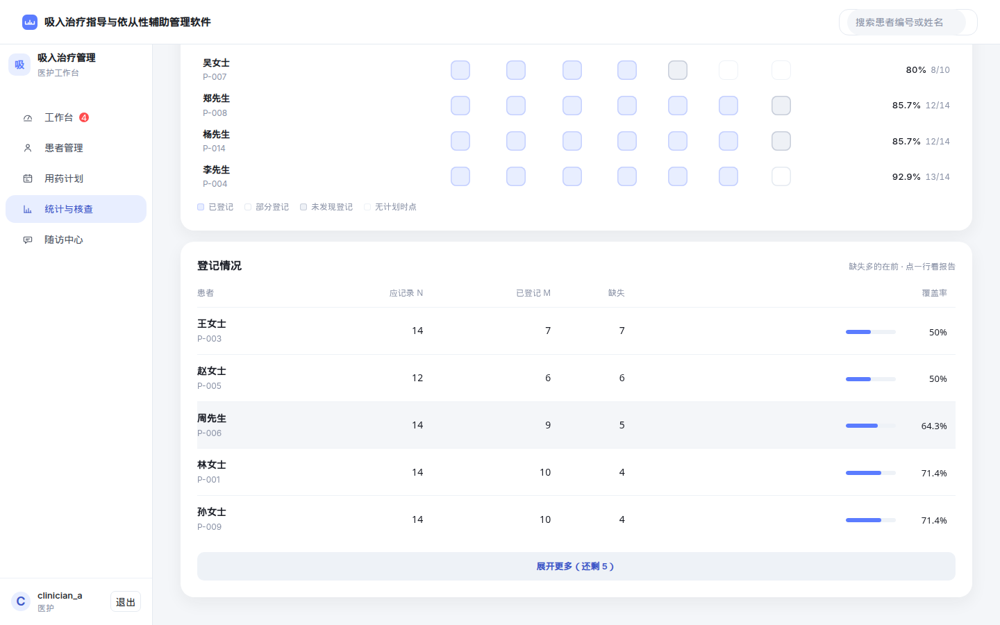
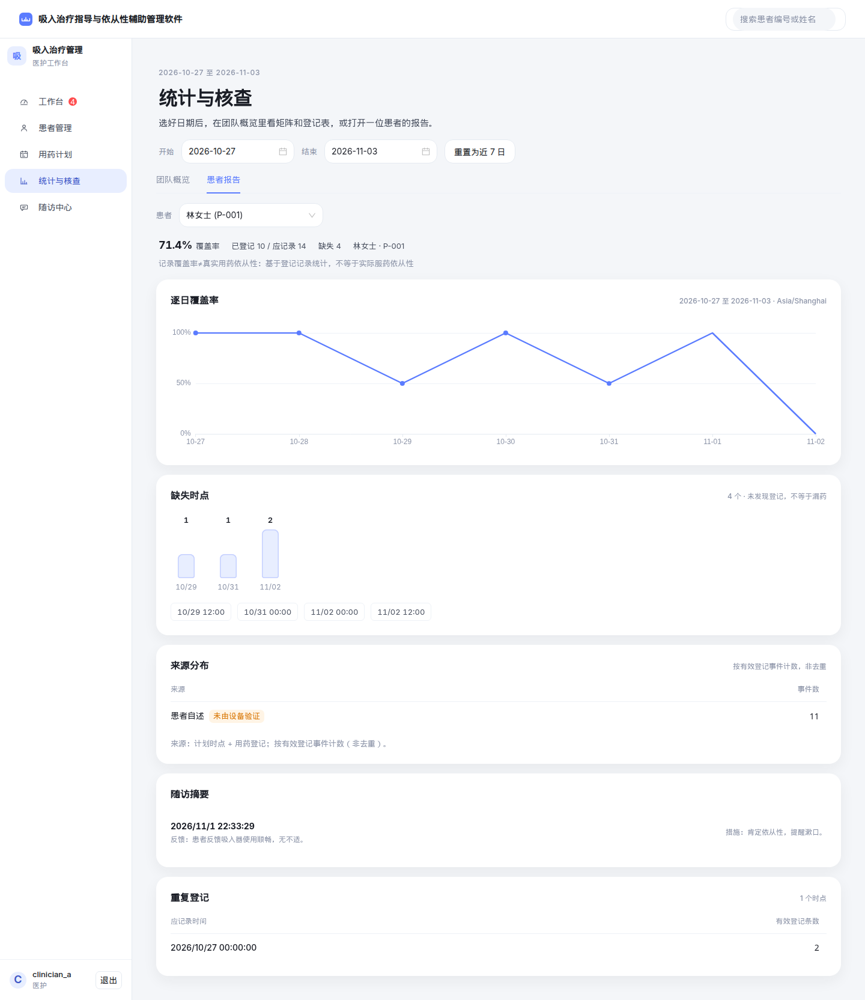

Clinic Comfort 全站截图 · 优化后
登录、工作台、患者管理、患者详情、用药计划、统计与核查、随访中心、管理端，共 15 张。主色为诊所蓝。
2026-11-04
1440 × 900 视口
clinician_a / admin
除弹窗外均为整页长图
认证
查看原图
01 · 登录页
软底「吸」标和诊所蓝主按钮，账号密码进入医护端。
查看原图
02 · 工作台
一行今日与待核查，近 7 日刻度对照需关注，队列里直接补登或处理。
患者与计划
查看原图
03 · 患者管理
负责患者列表；未绑定用表头芯片筛出，实心按钮只有新建患者。
查看原图
04 · 患者详情
李先生：问候与四项摘要。侧栏钉在这一屏，用户和退出停在栏底；卡片仍按内容高。
查看原图
05 · 用药计划编辑
为李先生填写新计划，右侧对照已关闭的历史版本。
统计与核查

查看原图
06 · 团队概览
主栏滚到登记情况时，侧栏仍钉在视口里，用户和退出不跟着走。登记情况先露缺失最多的 5 位。

查看原图
07 · 患者报告
林女士：覆盖率、逐日趋势、缺失时点、来源、随访与重复登记。
随访与任务闭环
查看原图
08 · 随访中心
待核查队列和随访记录；记录默认五行，多出的可以展开。
查看原图
09 · 任务处理弹窗
必填处理说明，可选安排一次操作复训提醒。
查看原图
10 · 补登用药弹窗
近 7 日未登记时点平铺点选，确认后补登。
管理端
查看原图
11 · 装置型号
pMDI / DPI / SMI 型号目录。
查看原图
12 · 指导版本
指导稿审核与发布状态。
查看原图
13 · 账号
医护、管理员与患者账号。
查看原图
14 · 知识内容
三份已发布的装置知识稿，审核发布后供患者端引用。
查看原图
15 · 审计日志
计划修订、随访、指导与知识发布等关键写操作留痕。